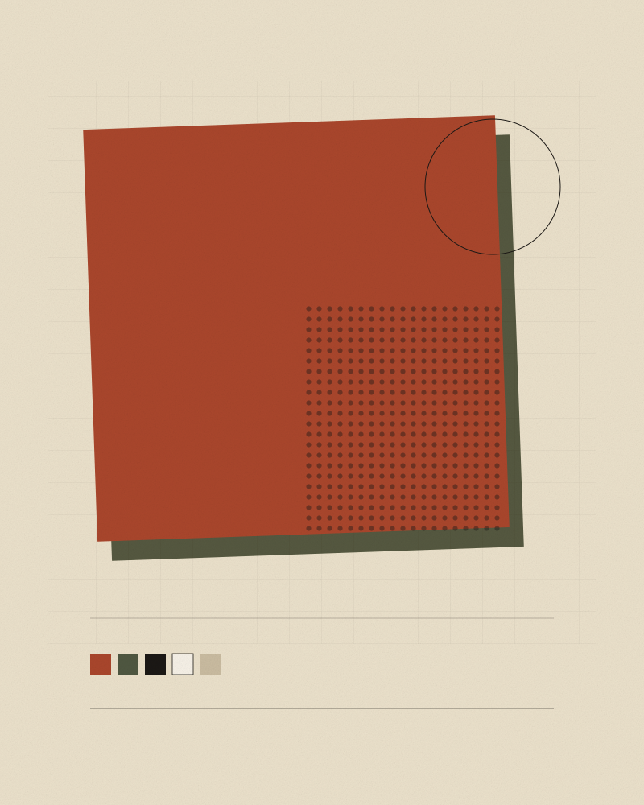

Issue 01 — Winter
把网页当成
一张可以反复印的纸。
Printed slowly, on purpose.
这一期收了十八句关于手艺的话、七件今晚就能动手的小事，还有一台只会把自己关掉的机器。没有算法，没有订阅窗，翻页靠自己点。

目录
Contents
Editorial
为什么慢
这套页面是在一个下午里排完的。没有设计系统，没有组件库，只有一套字号、一条一像素的线和两种印色。想做的东西太多时，先把它们减到四页，剩下的自然就清楚了。
印刷厂有条老规矩：先用最少的颜色把话说清楚，再考虑加色。网页也一样 —— 先把标题、正文、留白排好，动效、插画、花边都是可选项，不是必需品。
限制不是敌人。限制是尺子。
所以这里没有轮播、没有弹窗、没有「猜你喜欢」。每页只做一件事：让你读一句话，挑一个点子，或者按一下开关。页面底下的那行小字也不是装饰，它写着这一期用了什么字体、什么纸色、什么线宽。
Colophon
这一期是怎么做出来的
四页共用一套样式表、一份导航源文件。所有图都是手写的 SVG，没有一张照片、没有一个占位块。
- DisplayInstrument Serif（正文标题的英文部分）
- TextNoto Serif CJK / 宋体，正文用思源黑体
- Paper#F5F0E6，纸纹用一层极淡的噪点
- Ink赤陶 #A9462C、橄榄 #4F5741，仅此二色
- Rule1 像素，透明度 16%，不用投影和圆角
- Build无。打开 index.html 就是成品